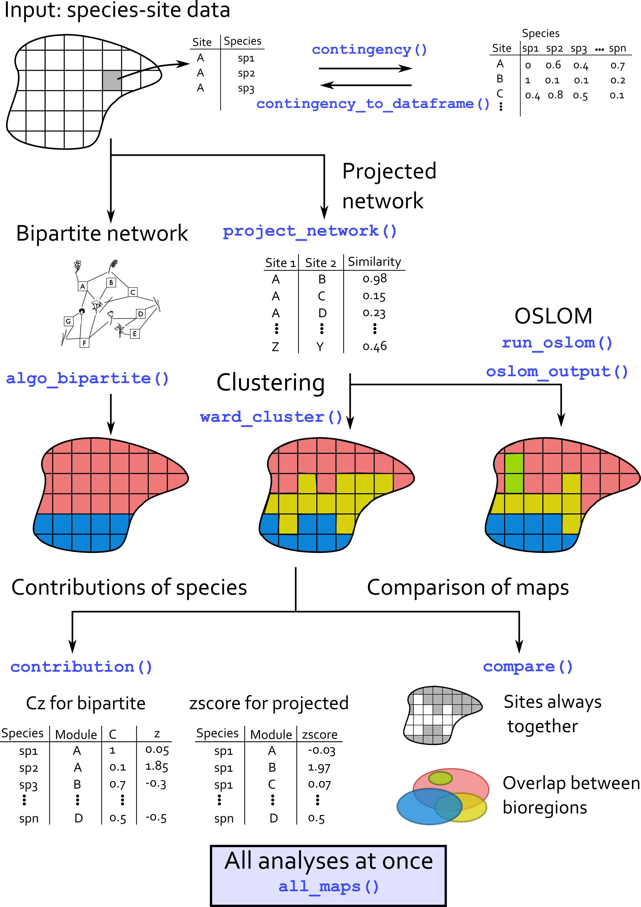
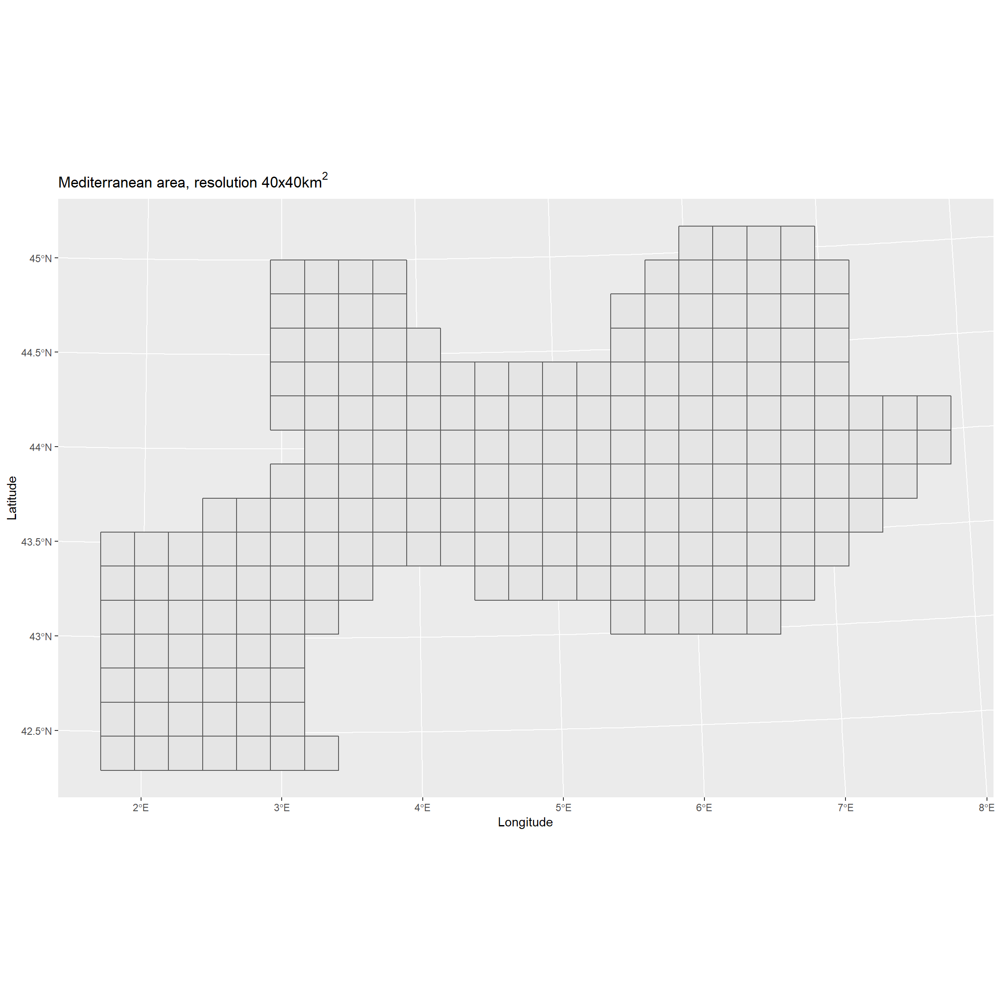
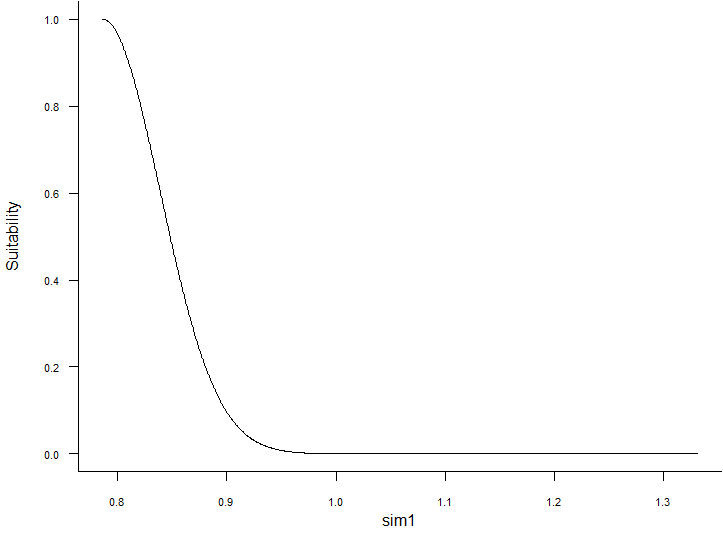
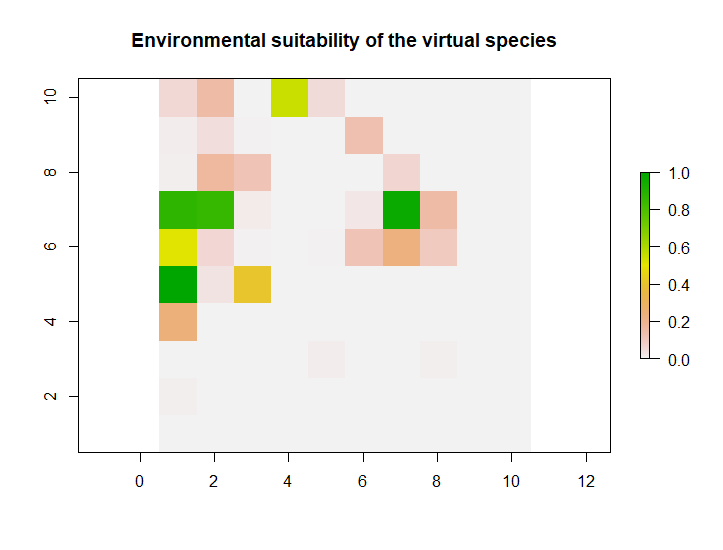
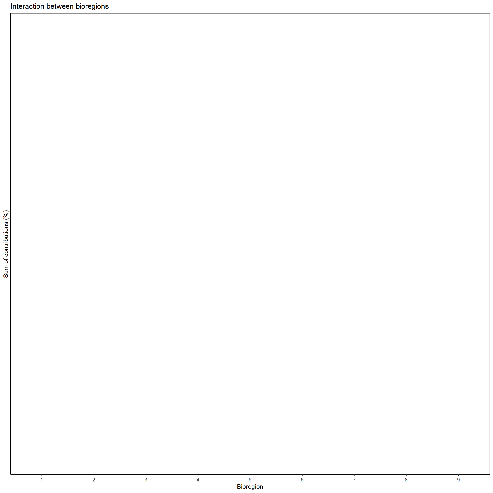
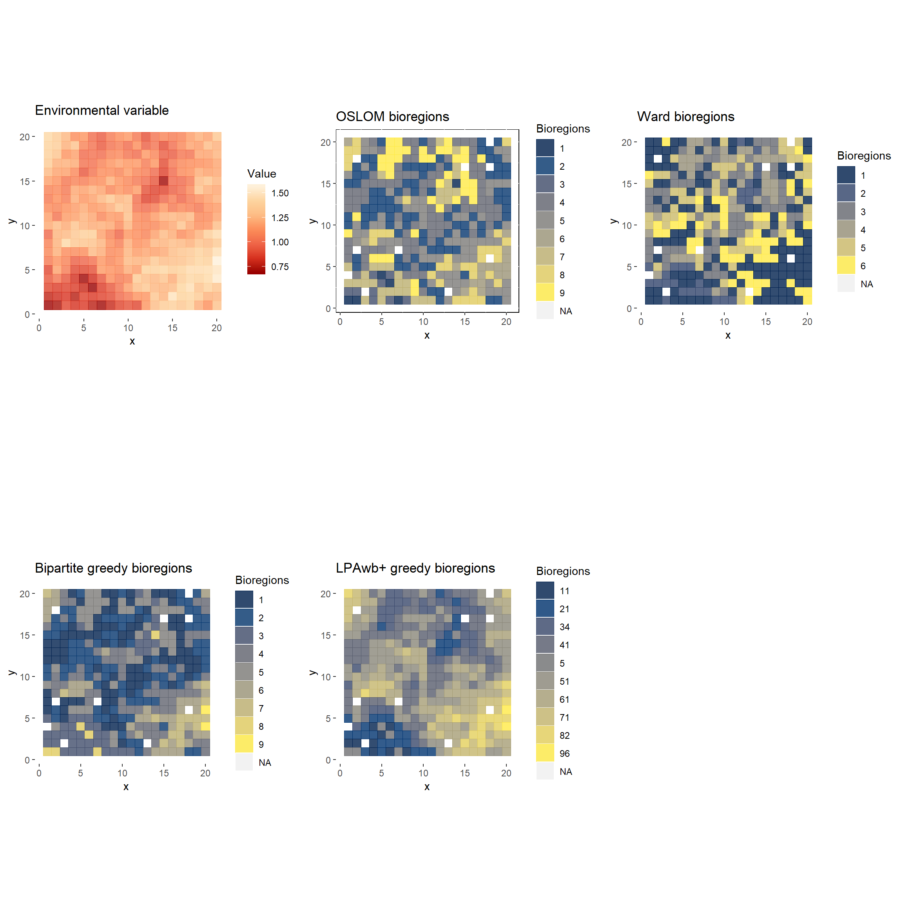

Tutorial for Bioregionalization R package
Pierre Denelle
2019-10-31
tutorial.RmdThe principle of the package is illustrated by the following figure.

virtual_sp is a dataset simulated that comes with the package. This dataset relies on the response curve of virtual species to a virtual raster. The virtual raster contains 10000 cells and was simulated using gstat R package. See here for details.
Based on this layer, the virtualspecies R package (Leroy et al. 2015) was used to simulate the response curve of 100 virtual species. A Gaussian curve was used. The mean and standard deviation of the response function was varying among species, such as some of them are more or less generalists/specialists.
For every species in every cell, we could derive a suitability index. Species with suitability index inferior to 0.15 were arbitrarily set absent.
# Import virtual dataset
data("virtual_sp")
# Only species data.frame
sp_df <- virtual[[1]]
# Plot of environmental values
sp_df %>%
distinct(site, .keep_all = TRUE) %>%
ggplot(aes(x, y)) +
geom_tile(aes(fill = env, color = env),
alpha = 0.8, width = 1, height = 1) +
scale_color_distiller("Value", palette = "OrRd") +
scale_fill_distiller("Value", palette = "OrRd") +
coord_equal() +
labs(title = "Environmental variable") +
theme(panel.background = element_rect(fill = "transparent",colour = NA))


The first step is to convert the data.frame into a contingency table.
sp_mat <- contingency(sp_df[which(sp_df$pa != 0), ],
"site", "sp", ab = NULL, binary = TRUE)
knitr::kable(sp_mat[1:5, 1:5])| sp1 | sp2 | sp3 | sp4 | sp5 | |
|---|---|---|---|---|---|
| site1 | 1 | 1 | 1 | 1 | 1 |
| site10 | 0 | 0 | 0 | 0 | 0 |
| site100 | 0 | 0 | 0 | 0 | 0 |
| site101 | 0 | 0 | 0 | 0 | 0 |
| site102 | 0 | 0 | 0 | 0 | 0 |
We then need to project the network.
sp_proj <- project_network(sp_mat, similarity = "simpson")
sp_proj <- sp_proj[, c("id1", "id2", "simpson")]
knitr::kable(head(sp_proj))| id1 | id2 | simpson |
|---|---|---|
| 4 | 6 | 1.0000000 |
| 7 | 8 | 1.0000000 |
| 7 | 9 | 0.8571429 |
| 8 | 9 | 1.0000000 |
| 5 | 10 | 0.6666667 |
| 4 | 11 | 1.0000000 |
sp_proj_w <- project_network(sp_mat_w, similarity = "bray")
sp_proj_w <- sp_proj_w[, c("id1", "id2", "bray")]
knitr::kable(head(sp_proj_w))| id1 | id2 | bray | |
|---|---|---|---|
| 2 | 2 | 1 | 0.0162964 |
| 3 | 3 | 1 | 0.0000000 |
| 4 | 4 | 1 | 0.0005101 |
| 5 | 5 | 1 | 0.0000020 |
| 6 | 6 | 1 | 0.0002640 |
| 7 | 7 | 1 | 0.0016733 |

Running OSLOM. tp files containing the modularity results are directly stored within the virtual dataset, but the following chunk can be run independently.
Output of OSLOM are stored in a chosen directory and can be import into R with the command readRDS().
run_oslom(sp_proj, n_runs = 5, t_param = 0.1, cp_param = 0.5,
saving_directory = "D:/PIERRE_DENELLE/CarHab/Bioregionalization_extra/")
res <- readRDS("../../Bioregionalization_extra/tp.rds")
file.rename("../../Bioregionalization_extra/tp.rds",
"../../Bioregionalization_extra/tp_binary.rds")
# With weights
run_oslom(sp_proj_w, n_runs = 5, t_param = 0.1, cp_param = 0.5,
saving_directory = "../../Bioregionalization_extra/")
res_w <- readRDS("../../Bioregionalization_extra/tp.rds")Converting the OSLOM .tp file into a list.
# Format OSLOM output into a data.frame
oslom_vignette <- oslom_output(virtual[[2]], sp_mat)
# With weights
oslom_vignette_w <- oslom_output(virtual[[3]], sp_mat_w)
print(paste0("Number of bioregions detected = ",
length(unique(oslom_vignette$bioregion)),
"; and with weights: ",
length(unique(oslom_vignette_w$bioregion))))## [1] "Number of bioregions detected = 9; and with weights: 6"Step 3 of Figure 1 (see Lenormand et al. (2019))

\[ \rho_{ij} = \frac{n_{ij} - \frac{n_in_j}{n}}{\sqrt(\frac{n-n_j}{n-1}(1-\frac{n_j}{n})\frac{n_jn_i}{n})} \]
# tmp <- left_join(sp_df, oslom_vignette, by = "site")
tmp <- left_join(sp_df, oslom_vignette, by = "site")
z_scores <- zscore(tmp, sp_col = "sp", site_col = "site",
bioregion_col = "bioregion", plot = TRUE,
output_format = "dataframe")
top10 <- z_scores[[1]] %>%
group_by(bioregion) %>%
top_n(n = 10, zscore) %>% # extract top 10
mutate(rank = rank(-zscore, # ranking zcore in an ascending order
ties.method = "first")) %>% # if tie zscore, first species
dplyr::select(sp, bioregion, zscore, rank) %>%
mutate(zscore = round(zscore, 1)) %>% # rounding zscore to 1 digit
as.data.frame()
knitr::kable(top10[which(top10$bioregion == "2"), ])| sp | bioregion | zscore | rank | |
|---|---|---|---|---|
| 101 | sp1 | 2 | 0 | 1 |
| 102 | sp2 | 2 | 0 | 2 |
| 103 | sp3 | 2 | 0 | 3 |
| 104 | sp4 | 2 | 0 | 4 |
| 105 | sp5 | 2 | 0 | 5 |
| 106 | sp6 | 2 | 0 | 6 |
| 107 | sp7 | 2 | 0 | 7 |
| 108 | sp8 | 2 | 0 | 8 |
| 109 | sp9 | 2 | 0 | 9 |
| 110 | sp10 | 2 | 0 | 10 |
| 111 | sp11 | 2 | 0 | 11 |
| 112 | sp12 | 2 | 0 | 12 |
| 113 | sp13 | 2 | 0 | 13 |
| 114 | sp14 | 2 | 0 | 14 |
| 115 | sp15 | 2 | 0 | 15 |
| 116 | sp16 | 2 | 0 | 16 |
| 117 | sp17 | 2 | 0 | 17 |
| 118 | sp18 | 2 | 0 | 18 |
| 119 | sp19 | 2 | 0 | 19 |
| 120 | sp20 | 2 | 0 | 20 |
| 121 | sp21 | 2 | 0 | 21 |
| 122 | sp22 | 2 | 0 | 22 |
| 123 | sp23 | 2 | 0 | 23 |
| 124 | sp24 | 2 | 0 | 24 |
| 125 | sp25 | 2 | 0 | 25 |
| 126 | sp26 | 2 | 0 | 26 |
| 127 | sp27 | 2 | 0 | 27 |
| 128 | sp28 | 2 | 0 | 28 |
| 129 | sp29 | 2 | 0 | 29 |
| 130 | sp30 | 2 | 0 | 30 |
| 131 | sp31 | 2 | 0 | 31 |
| 132 | sp32 | 2 | 0 | 32 |
| 133 | sp33 | 2 | 0 | 33 |
| 134 | sp34 | 2 | 0 | 34 |
| 135 | sp35 | 2 | 0 | 35 |
| 136 | sp36 | 2 | 0 | 36 |
| 137 | sp37 | 2 | 0 | 37 |
| 138 | sp38 | 2 | 0 | 38 |
| 139 | sp39 | 2 | 0 | 39 |
| 140 | sp40 | 2 | 0 | 40 |
| 141 | sp41 | 2 | 0 | 41 |
| 142 | sp42 | 2 | 0 | 42 |
| 143 | sp43 | 2 | 0 | 43 |
| 144 | sp44 | 2 | 0 | 44 |
| 145 | sp45 | 2 | 0 | 45 |
| 146 | sp46 | 2 | 0 | 46 |
| 147 | sp47 | 2 | 0 | 47 |
| 148 | sp48 | 2 | 0 | 48 |
| 149 | sp49 | 2 | 0 | 49 |
| 150 | sp50 | 2 | 0 | 50 |
| 151 | sp51 | 2 | 0 | 51 |
| 152 | sp52 | 2 | 0 | 52 |
| 153 | sp53 | 2 | 0 | 53 |
| 154 | sp54 | 2 | 0 | 54 |
| 155 | sp55 | 2 | 0 | 55 |
| 156 | sp56 | 2 | 0 | 56 |
| 157 | sp57 | 2 | 0 | 57 |
| 158 | sp58 | 2 | 0 | 58 |
| 159 | sp59 | 2 | 0 | 59 |
| 160 | sp60 | 2 | 0 | 60 |
| 161 | sp61 | 2 | 0 | 61 |
| 162 | sp62 | 2 | 0 | 62 |
| 163 | sp63 | 2 | 0 | 63 |
| 164 | sp64 | 2 | 0 | 64 |
| 165 | sp65 | 2 | 0 | 65 |
| 166 | sp66 | 2 | 0 | 66 |
| 167 | sp67 | 2 | 0 | 67 |
| 168 | sp68 | 2 | 0 | 68 |
| 169 | sp69 | 2 | 0 | 69 |
| 170 | sp70 | 2 | 0 | 70 |
| 171 | sp71 | 2 | 0 | 71 |
| 172 | sp72 | 2 | 0 | 72 |
| 173 | sp73 | 2 | 0 | 73 |
| 174 | sp74 | 2 | 0 | 74 |
| 175 | sp75 | 2 | 0 | 75 |
| 176 | sp76 | 2 | 0 | 76 |
| 177 | sp77 | 2 | 0 | 77 |
| 178 | sp78 | 2 | 0 | 78 |
| 179 | sp79 | 2 | 0 | 79 |
| 180 | sp80 | 2 | 0 | 80 |
| 181 | sp81 | 2 | 0 | 81 |
| 182 | sp82 | 2 | 0 | 82 |
| 183 | sp83 | 2 | 0 | 83 |
| 184 | sp84 | 2 | 0 | 84 |
| 185 | sp85 | 2 | 0 | 85 |
| 186 | sp86 | 2 | 0 | 86 |
| 187 | sp87 | 2 | 0 | 87 |
| 188 | sp88 | 2 | 0 | 88 |
| 189 | sp89 | 2 | 0 | 89 |
| 190 | sp90 | 2 | 0 | 90 |
| 191 | sp91 | 2 | 0 | 91 |
| 192 | sp92 | 2 | 0 | 92 |
| 193 | sp93 | 2 | 0 | 93 |
| 194 | sp94 | 2 | 0 | 94 |
| 195 | sp95 | 2 | 0 | 95 |
| 196 | sp96 | 2 | 0 | 96 |
| 197 | sp97 | 2 | 0 | 97 |
| 198 | sp98 | 2 | 0 | 98 |
| 199 | sp99 | 2 | 0 | 99 |
| 200 | sp100 | 2 | 0 | 100 |
Interaction plots.
| focal_bioregion | bioregion | lambda |
|---|---|---|
| 1 | 1 | NaN |
| 2 | 1 | NaN |
| 3 | 1 | NaN |
| 4 | 1 | NaN |
| 5 | 1 | NaN |
| 6 | 1 | NaN |

Example with Ward analysis and k-means clustering.
Bipartite algorithms applied on example dataset.
# With fastgreedy
bip <- algo_bipartite(dat = sp_mat, algo = "greedy", weight = FALSE)
# With Beckett algorithm
bip2 <- algo_bipartite(dat = sp_mat, algo = "LPAwb", weight = FALSE)
# Only sites
bip_site <- bip %>%
filter(cat == "site") %>%
rename(site = node) %>%
dplyr::select(site, module)
bip_site2 <- bip2 %>%
filter(cat == "site") %>%
rename(site = node) %>%
dplyr::select(site, module)Cz computation on bipartite results.
bip_cz <- bip[, c("node", "module", "cat")]
colnames(bip_cz) <- c("node", "mod", "cat")
link_cz <- sp_df[, c("site", "sp")] %>%
left_join(bip_cz[which(bip_cz$cat == "site"), c("node", "mod")],
by = c("site" = "node")) %>%
rename(mod_site = mod) %>%
left_join(bip_cz[which(bip_cz$cat == "sp"), c("node", "mod")],
by = c("sp" = "node")) %>%
rename(mod_sp = mod)
cz_bip <- cz(link_dat = link_cz, dat = bip_cz, ab = NULL)
head(cz_bip[[1]])## node mod cat C n_link_mod mean_link_mod sd_link_mod z
## 1 site101 1 site 0.88 10 17.95918 23.73215 -0.3353756
## 2 site103 1 site 0.88 10 17.95918 23.73215 -0.3353756
## 3 site108 1 site 0.88 10 17.95918 23.73215 -0.3353756
## 4 site121 1 site 0.88 10 17.95918 23.73215 -0.3353756
## 5 site123 1 site 0.88 10 17.95918 23.73215 -0.3353756
## 6 site124 1 site 0.88 10 17.95918 23.73215 -0.3353756Projection on a map.
plot_grid(
# Plot of environmental values
sp_df %>%
distinct(site, .keep_all = TRUE) %>%
ggplot(aes(x, y)) +
geom_tile(aes(fill = env, color = env),
alpha = 0.8, width = 1, height = 1) +
scale_color_distiller("Value", palette = "OrRd") +
scale_fill_distiller("Value", palette = "OrRd") +
coord_equal() +
labs(title = "Environmental variable") +
theme(panel.background = element_rect(fill = "transparent",colour = NA)),
# Plot of OSLOM bioregions
sp_df %>%
left_join(oslom_vignette, by = "site") %>%
distinct(site, .keep_all = TRUE) %>%
ggplot(aes(x, y)) +
geom_tile(aes(fill = as.factor(bioregion), color = as.factor(bioregion)),
alpha = 0.8, width = 1, height = 1) +
scale_color_viridis_d("Bioregions", option = "E") +
scale_fill_viridis_d("Bioregions", option = "E") +
coord_equal() +
labs(title = "OSLOM bioregions") +
theme(panel.background = element_rect(fill = "transparent",
colour = "black")),
# Plot of Ward bioregions
sp_df %>%
left_join(ward_res, by = "site") %>%
distinct(site, .keep_all = TRUE) %>%
ggplot(aes(x, y)) +
geom_tile(aes(fill = as.factor(cluster), color = as.factor(cluster)),
alpha = 0.8, width = 1, height = 1) +
scale_color_viridis_d("Bioregions", option = "E") +
scale_fill_viridis_d("Bioregions", option = "E") +
coord_equal() +
labs(title = "Ward bioregions") +
theme(panel.background = element_rect(fill = "transparent",colour = NA)),
# Plot of fastgreedy bioregions
sp_df %>%
left_join(bip_site, by = "site") %>%
distinct(site, .keep_all = TRUE) %>%
ggplot(aes(x, y)) +
geom_tile(aes(fill = as.factor(module), color = as.factor(module)),
alpha = 0.8, width = 1, height = 1) +
scale_color_viridis_d("Bioregions", option = "E") +
scale_fill_viridis_d("Bioregions", option = "E") +
coord_equal() +
labs(title = "Bipartite greedy bioregions") +
theme(panel.background = element_rect(fill = "transparent",colour = NA)),
# Plot of LPAwb bioregions
sp_df %>%
left_join(bip_site2, by = "site") %>%
distinct(site, .keep_all = TRUE) %>%
ggplot(aes(x, y)) +
geom_tile(aes(fill = as.factor(module), color = as.factor(module)),
alpha = 0.8, width = 1, height = 1) +
scale_color_viridis_d("Bioregions", option = "E") +
scale_fill_viridis_d("Bioregions", option = "E") +
coord_equal() +
labs(title = "LPAwb+ greedy bioregions") +
theme(panel.background = element_rect(fill = "transparent",colour = NA)),
nrow = 2)
All these functions can be called with the wrap-up all_maps() function.
Another dataset is available within Bioregionalization and all the above analyses can be run in an identical fashion.
# Import Mediterranean dataset
data("medit")
# Plot of Mediterranean area
medit[[2]] %>%
ggplot() +
geom_sf() +
labs(title = expression("Mediterranean area, resolution 40x40km"^2),
x = "Longitude", y = "Latitude")
sp_df <- medit[[1]] %>%
rename(site = id) %>%
mutate(site = as.character(site),
sp = as.character(sp))
# Random vector of abundances assigned for weighted networks
sp_df$ab <- runif(n = nrow(sp_df), min = 0, max = 1)
colnames(medit[[2]]) <- c("site", "geometry")
medit[[2]]$site <- as.character(medit[[2]]$site)
colnames(medit[[2]]) <- c("site", "geometry")